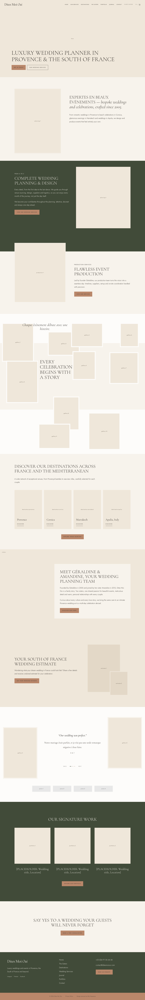

The current homepage uses a full-screen wedding film, two sisters’ portraits, portfolio photography, and four destination stories: Provence, French Riviera, Corsica and Beyond. The original supplied media are unchanged. Open the homepage · Media guide and verification
